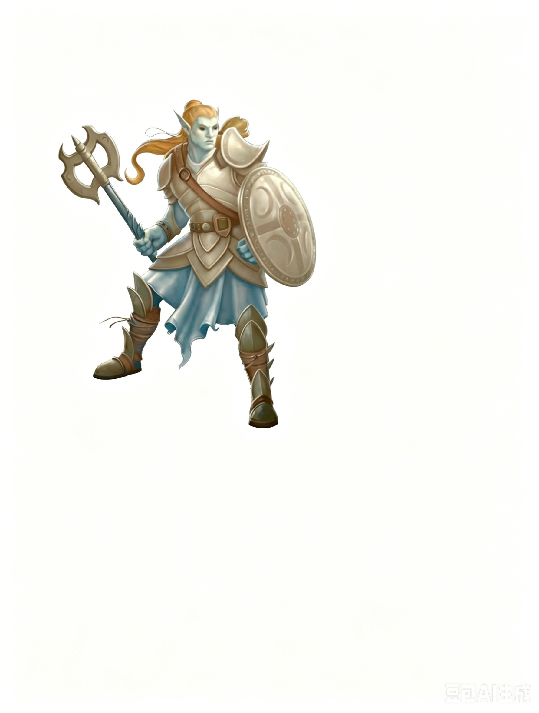

大型精类生物 | 挑战级数 7一个高大的类人生物突然闪烁了一下，就像月光在池塘上反射的光芒。它单手挥舞着一把巨大的弯月形战斧，另一只手持一面刻有新月图案的盾牌。它的眼中透着苍白而邪恶的光芒。
月光掠杀者 ―― 通常混乱邪恶。
| 生命骰 | 14d8+42（105HP）；DR 5/魔法与寒铁 |
| 先攻 | +7 |
| 速度 | 40 英尺 (8格) |
| 防御等级 | 24，接触 12，措手不及 21（�C1体型，+3敏捷，+4盔甲，+3盾牌，+5天生） |
| 基本攻击/擒抱 | +7 / +17 |
| 近战攻击 | 精制战斧 +14/+9 (2d6+6/×3) |
| 远程攻击 | 标枪 +9 (1d8+6) |
| 占据/触及 | 10 英尺 / 10 英尺 |
| 攻击选项 | 顺势斩，猛力攻击 |
| 特殊能力 | 卓越昏暗视觉；月光骑手 |
| 豁免 | 强韧 +8，反射 +12，意志 +11 |
| 属性 | 力量 23，敏捷 16，体质 18，智力 11，感知 14，魅力 8 |
| 技能 | 躲藏 +15*，跳跃 +9，自然知识 +19，聆听 +19，潜行 +19，侦查 +19，生存 +19 (在地表自然环境中 +21) |
| 专长 | 顺势斩，精通先攻，猛力攻击，追踪，武器专攻 (战斧) |
| 语言 | 通用语，巨人语 |
| 装备 | +1钉皮甲，+1重型木盾，精制品战斧，8支标枪，青铜信号号角 |
| 进化 | 按角色职业 |
| 偏好职业 | 野蛮人 (详见下文) |
类法术能力（施法者等级 14）：
随意使用：凌空而行、妖火。
3次/天：隐形术 (仅限自身)、行迹无踪。
1次/天：锐耳术/鹰眼术 (详见下文)。
卓越昏暗视觉 (Ex)：月光掠杀者在昏暗光线下的视觉距离是人类的五倍，如果有月光则是十倍。
锐耳术/鹰眼术 (Sp)：（仅限视觉）月光掠杀者只能查看自己熟悉的区域，且该区域必须在观察时被月光照亮。
月光骑手 (Su)：类似于高等传送术；随意使用；施法者等级 18。使用此能力需要 1 分钟专注。在月光掠杀者的狩猎小屋之外，它必须站在月光下，且只能传送自身及所携物品到最近的小屋内。在小屋内，它可使用此能力传送到距离小屋 10 英里内的任何地点。传送前一刻，月光掠杀者的身体会变得如雾般虚幻。
* 躲藏：月光掠杀者在夜间户外隐藏检定中获得 +10 种族加值。
月光掠杀者是凶残的精类生物，天生以狩猎为乐。这些令人畏惧的生物栖息在云间的狩猎小屋中。在月光明亮的夜晚，它们会沿着月光束降临地表，进行猎杀和掠夺。它们收集猎物的战利品和财物，随后返回小屋庆祝、休息，并准备下一次狩猎。
生态与习性：月光掠杀者是超自然的猎手，有人认为它们体现了自然界的残暴本性。然而，它们在很大程度上已经脱离了自然世界。它们更像是过度膨胀的清道夫，将狩猎小屋下方的土地视为财富和猎物的肥沃之地。它们捕猎以获取肉食，并突袭聚居地寻找烈酒和补给品。月光掠杀者的交配方式据说与类人生物类似。
环境：月光掠杀者在任何地形中都能狩猎，但很少深入地下区域。它们更喜欢能够清晰看到天空的地区，既靠近文明以便于突袭，又远离大型军队和其他威胁。它们居住在漂浮于云中的狩猎小屋中。在这种环境中，它们在突袭地表世界的间隙捕猎鸟类和其他飞行生物。
典型身体特征：月光掠杀者的平均身高略高于 9 英尺，体重约 550 磅。它们的皮肤白皙，雌性尤为苍白，头发一律为金色。
阵营：月光掠杀者嗜血、野蛮、冷酷无情，对他人（甚至是同族）福祉漠不关心。它们通常是混乱邪恶的。然而，有些月光掠杀者群体可能是混乱中立的，仅为测试自身技能而狩猎，很少为了娱乐杀害弱小的猎物。这些中立的精类甚至可能与其他生物进行交易。
当月光掠杀者单独战斗时，它依靠类法术能力来出其不意地对付敌人，使用行迹无踪掩盖踪迹，利用隐形术接近目标。掠夺者会观察猎物一段时间，以了解其能力并可能利用地形优势。如果认为对手值得挑战，它会使用凌空而行从上方发起攻击。一旦进入战斗，它会先试探对手的防御，再使用猛力攻击。如果面对一群敌人，孤身一人的掠夺者通常会迅速击杀一个目标，夺取尸体后使用月光骑手能力逃回安全地点。
在狩猎中，掠夺者通常会分散行动，以稀疏的队形覆盖大范围区域，猎手之间保持 100 英尺到半英里不等的距离。它们使用行迹无踪来避免追踪，同时通过战争呐喊、吹响青铜号角以及彼此呼唤来保持联系和追踪猎物。
当其中一个掠夺者发现目标时，无论是从巢穴中被惊动的龙，还是夜晚在外的农夫，它都会吹响号角通知其他猎手。随后，所有掠夺者使用隐形术，再通过号角声引导盟友埋伏，而其中一名掠夺者则将猎物赶向埋伏圈。
一旦目标被包围，掠夺者会展开凶猛的攻击。一些掠夺者使用凌空而行从空中发动袭击，另一些则封锁目标的逃跑路径。一些猎手会立即使用猛力攻击，若效果显著，其他猎手也会效仿。整个夜晚，掠夺者会重复这种狩猎方式，收集战利品和掠夺财物。如果狩猎队损失过半，其余成员通常会撤退。
"我听到过满月时响起的号角声，也曾协助埋葬那些夜晚进入森林后无头的尸体。如果你不想成为掠夺者的战利品，我建议你今晚留在这里。" ――酒馆老板奥斯特勒，向雷加尔的忠告
月光掠杀者可能单独行动，也可能组队狩猎。掠夺者的能力和地位越高，越有可能独自寻求荣耀。有时，年轻的月光掠杀者会独自展开狩猎，以证明自己的实力并赢得氏族的尊重。
单独行动 (EL 7)：一名孤身的月光掠杀者正在寻找鲜血与荣耀。
EL 7：年轻的月光掠杀者拉芙娜 (Ravnha) 为证明自己，在一座木桥附近设置了陷阱，同时使用了行迹无踪能力。她破坏了桥梁的几处支撑点，并躲在附近的道路上观察旅人。当她发现适合的目标时，会使用隐形术和凌空而行。随后，她破坏桥梁的最后关键支撑，桥塌之时从空中跳下发动攻击。
狩猎队 (EL 11+)：四名或更多月光掠杀者组成狩猎队。
EL 11：阿布哈 (Arbha)、克罗纳克 (Clonach)、艾布拉 (Ebhla) 和纽伊尔 (Nuil) 在月光笼罩的森林中展开午夜狩猎。他们使用狩猎队的典型战术，如前文所述。
月光掠杀者的社会以氏族为基础，强调力量、战斗技能、威势和财富的原则。每个氏族由血缘或配偶关系的个体组成。月光掠杀者通过从突袭中带回大量战利品、精美的战斗纪念品以及丰富的食物和饮品来赢得氏族中的地位。男性与女性掠夺者在社会中的地位平等，全凭个人能力决定。
一个月光掠杀者氏族居住在建于云上的狩猎小屋中。小屋的居民对方向有一定的控制，但混乱的掠夺者通常任凭风将他们带往目的地。他们喜欢不断移动，而不是在一个地方停留太久。这种策略避免了对某一地区的过度捕猎，也让月光掠杀者难以应对，因为它们的攻击随机且迅速，往往在当地势力组织反击之前就离开了。
氏族之间的关系同样混乱无序。偶然相遇的两个氏族可能发生冲突、进行交易、交换信息、狂欢作乐、互换成员，甚至彼此抢劫。这些事件通常以某种随机顺序发生，有时甚至全部都会发生。
这些邪恶的精类认为任何与战斗、地位或享乐无关的手艺都是浪费时间。虽然它们会自己打造武器和护甲、建造小屋并制作恐怖的饰品，但对制造其他物品几乎毫无兴趣。它们更倾向于从他人那里夺取工具和设备，以及基本生活所需的物资。
作为掠夺者和猎手，月光掠杀者通常在偏远地区谋求生存。每月的几个夜晚，它们会突袭地表世界，劫掠和杀戮。它们避免大型聚居地，因为那里的抵抗可能会构成真实威胁。然而，如果它们发现一个农场或防御薄弱的村庄，它们会将袋子装满食物、酒桶、牲畜，甚至抓走一两个农民。临近黎明时，它们最后一次吹响号角，然后返回小屋，开始盛宴、饮酒和庆祝狩猎的胜利。
月光掠杀者的特点：月光掠杀者喜欢戏弄猎物，且常低估体型较小的生物。这种轻敌的倾向在面对技艺高超的对手时对它们极为不利。尽管它们憎恨懦弱，但并非愚蠢之辈。如果发现敌人占据上风，它们会果断撤退。月光掠杀者的腰带上更常挂着恐狼、魔法兽和普通人的头骨，而非龙族、恶魔或英雄的遗骸。
一些月光掠杀者会进行长途旅行，以展示自己的战斗才能并提升在族群中的威望。这些雄心勃勃的掠夺者通常是它们种族中最聪明、最勇敢和最狡猾的个体。它们会与其他凶残的生物结盟，尤其是狼人和邪恶的精类，以肆意破坏和掠夺。它们的目标是载满财富与荣耀归来，从而赢得族群的领导地位。
被困在地表的月光掠杀者同样危险。这些倒霉的掠夺者可能因为离小屋太远或在地表停留过久，错过了利用月光返回小屋的机会。不管是由于嫉妒的同族的阴谋还是单纯的意外，当下一晚到来时，这些被困掠夺者会发现自己的云中小屋已经漂走。这种情况下，掠夺者通常会寻找更弱小但志趣相投的生物，特别是兽人和食人魔，以便折磨和指挥它们。一个由月光掠杀者领导的兽人部落是一种极大的威胁，因为掠夺者的智慧、强大的个性和洞察力使它成为一名出色的指挥官。少数月光掠杀者主动离开小屋，选择统治地表上的弱小生物，而不是在云间的小屋中为同族服务。
月光掠杀者的小屋中充满了无数世纪以来通过谋杀和盗窃积累的宝藏和战利品。由于这些精类贪婪成性，并以掠夺所得的财富衡量自身的声望，它们会搜刮每一枚硬币和有价值的物品。它们尤其喜欢掠夺凡人珍视的传家宝和富有情感价值的物品。掠夺者的小屋拥有双倍于其挑战等级的标准财宝，主要以金币和艺术品形式存在。然而，单独行动的月光掠杀者除了武器、护甲以及早前狩猎中获得的战利品外，几乎不携带其他财物。
月光掠杀者极其珍视其狩猎号角，这些古老的青铜号角在族群中世代相传。号角发出的音调令人毛骨悚然，是猎手到来的无误标志。
月光掠杀者的职业等级：月光掠杀者的偏好职业是野蛮人，这与它们粗暴的天性和对战斗的热爱一致。不过，它们中也有许多巡林客和游荡者。对于它们而言，用匕首从背后迅速解决争端是首选方式。月光掠杀者牧师信仰厄瑞斯努 (Erythnul)。这位恐怖的神�o的嗜血教义正符合掠夺者对杀戮和破坏的渴望。
等级调整：+6。
在艾伯伦：在艾伯伦，月光掠杀者主要生活在希恩德瑞克 (Xen'drik)。传说讲述了六座漂浮的城堡，它们曾是巨人帝国重要的魔法研究中心。这些城堡位于大陆上空，如今虽然月光掠杀者已堕落为野蛮生物，但这些城堡仍然藏有无数奇迹。
在费伦：在费伦大陆，月光掠杀者分布广泛。它们避开文明地区，因为深知竖琴手复仇者 (vengeful Harper) 或技艺高超的法师的威力。传闻称，塞尔 (Thay) 的红袍法师已与多个月光掠杀者氏族达成协议。这些法师以宝石、黄金和其他财富雇佣掠夺者，作为雇佣兵提供运输和服务。这些猎手精类或许正参与红袍法师针对莱瑟曼 (Rashemen) 的最新阴谋。
拥有 自然知识 (Knowledge (Nature)) 技能的角色可以了解更多关于月光掠杀者的信息。成功的技能检定可以揭示以下内容，包括较低 DC 的信息：
DC 17：这是一只月光掠杀者，凶残而好斗的精类生物。此结果揭示所有精类特性。
DC 22：月光掠杀者是追踪和狩猎的专家，能够在崎岖地形上追踪猎物数英里。
DC 27：月光掠杀者可以隐形并行走于空中，常利用这些能力追踪敌人。
DC 32：月光掠杀者能够将自己传送回云间的狩猎小屋，但此能力需要时间发动，并要求天空晴朗且有月光。